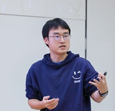

Qingsong Wang
Email: nothing2wang@hotmail.com


Biography
Qingsong Wang is currently a lecturer (master supervisor) at the School of Mathematics and Computational Science, Xiangtan University. He was born in December 1992 in Bazhong, Sichuan Province, China.
He received his PhD in Applied Mathematics from the School of Mathematical Sciences, Beihang University, in 2023.
His research focuses on numerical optimization, machine learning, and related areas, including (non)convex optimization and tensor optimization.
Education
- Jan. 2022 – Jan. 2023: Department of Mathematics, National University of Singapore (NUS). Supervisor: Prof. Kim-Chuan Toh
- Sep. 2019 – Jun. 2023: Ph.D. Applied Mathematics, Beihang University. Supervisor: Prof. Deren Han, Co-Supervisor: Prof. Chunfeng Cui
- Sep. 2016 – Jun. 2019: M.Sc. Mathematics, Southwest Jiaotong University. Supervisor: Prof. Chengjing Wang
- Sep. 2011 – Jun. 2015: B.Sc. Mathematics and Applied Mathematics, Southwest Jiaotong University.
Research Interest
- Algorithms and Theories of (Non)Convex Optimization in Machine Learning
- Algorithms and Applications of Tensor Optimization
Selected Publications
A generalized inertial proximal alternating linearized minimization method for nonconvex nonsmooth problems
Qingsong Wang , Deren Han*. Applied Numerical Mathematics. 189, 66-87, 2023.
A Bregman proximal stochastic gradient method with extrapolation for nonconvex nonsmooth problems
Qingsong Wang , Zehui Liu, Chunfeng Cui*, Deren Han. Proceedings of the AAAI Conference on Artificial Intelligence, 38(14), 15580-15588, 2024.
Inertial accelerated SGD algorithms for solving large-scale lower-rank tensor CP decomposition problems
Qingsong Wang , Zehui Liu, Chunfeng Cui, Deren Han*. Journal of Computational and Applied Mathematics. 423, 114948, 2023.
A Momentum Accelerated Algorithm for ReLU-Based Nonlinear Matrix Decomposition
Qingsong Wang , Chunfeng Cui*, Deren Han. IEEE Signal Processing Letters. 31, 2865-2869, 2024.
A Bregman stochastic method for nonconvex nonsmooth problem beyond global Lipschitz gradient continuity
Qingsong Wang , Deren Han*. Optimization Methods and Software. 38 (5), 914-946, 2023.
* Corresponding author
Projects
国家自然科学基金委员会, 重大研究计划, 92473208, 芯粒分解和组合优化方法, 2025/01 - 2028/12, 300万元, 在研, 参与.
国家自然科学基金委员会, 面上项目, 12471282, 耦合张量分解的模型和非光滑优化算法研究, 2025/01 - 2028/12, 43万元, 在研, 参与.
国家自然科学基金委员会, 青年科学基金项目C类, 12401415, 数据驱动下广义张量CP分解的模型与算法研究, 2025/01 - 2027/12, 30万元, 在研, 主持.
湖南省自然科学基金委员会, 青年科学基金C类, 2025JJ60009, 基于非欧氏分布的张量分解算法及其应用研究, 2025/01 - 2027/12, 5万, 在研, 主持.
国家自然科学基金委员会, 数学天元基金项目, 12126603, 面向脊柱穿刺消融手术的多模态图像导航关键算法研究, 2022/01 - 2023/12, 100万元, 结题, 参与.
北京航空航天大学, 博士研究生卓越学术基金, 2022/05 - 2023/04, 4万, 结题, 主持.
Major Awards & Honors
- 北京航空航天大学“研究生十佳”提名奖, 2023
- 北京市优秀毕业生, 2023
{kind=link}
{kind=link}
{kind=link}
{kind=link}
{kind=link}